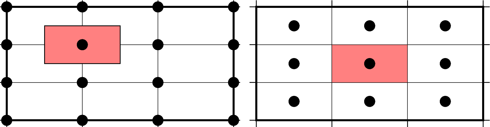

网格配准¶
GMT中的2D网格文件，在确定了网格范围和网格间隔后，网格线会出现在 \(x = x_{min}, x_{min} + x_{inc}, x_{min} + 2 \cdot x_{inc}, \ldots, x_{max}\) 和 \(y = y_{min}, y_{min} + y_{inc}, y_{min} + 2 \cdot y_{inc}, \ldots, y_{max}\) 处。而节点的位置有两种选择，即网格线配准（gridline registration）和像素配准（pixel registration）。GMT默认使用的是网格线配准方式。

GMT网格配准方式
（左）网格线配准；（右）像素配准。
注解
大多数原始观测数据都采样网格线配准方式，而有时经过处理的数据会以像素配准方式发布。尽管两种配准方式可以互相转换，但转换过程中会降低Nyquist采样率，压制一些高频信息。因而如果你可以控制，应尽量避免配准转换。
网格线配准¶
在网格线配准方式下，节点（图中黑色圆圈）中心位于网格线的交叉点处，节点的值代表了长宽为 \(x_{inc} \cdot y_{inc}\) 的单元（图中红色区域）内的平均值。这种情况下，节点数目与网格范围和间隔的关系为：
\[\begin{split}\begin{array}{ccl}
nx & = & (x_{max} - x_{min}) / x_{inc} + 1 \\
ny & = & (y_{max} - y_{min}) / y_{inc} + 1
\end{array}\end{split}\]
左图中nx=ny=4。
像素配准¶
在像素配准方式下，节点（图中黑色圆圈）位于网格单元的中心，即网格点之间的区域，节点的值代表了每个单元（图中红色区域）内的平均值。在这种情况下，节点数目与网格范围和间隔的关系为：
\[\begin{split}\begin{array}{ccl}
nx & = & (x_{max} - x_{min}) / x_{inc} \\
ny & = & (y_{max} - y_{min}) / y_{inc}
\end{array}\end{split}\]
因而，对于相同的网格区域和网格间隔而言，像素配准比网格线配准要少一列和一行数据。右图中nx=ny=3。